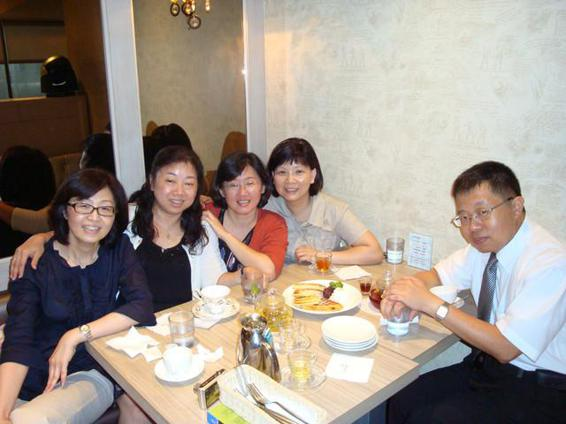

6月16日下午，那個以前是大雄，現在卻已痴肥成胖虎的小瓜呆，因為新書《你不知道的台灣‧校園奇案》裡，自序與349頁提到了其中兩位同學並附上照片，她們認為我侵犯了女生最寶貴的……還好，只是智慧財產權與肖像權而已，所以一定要我擺宴謝罪；不過她們也只是說說而已，最後她們還是堅持各付各帳。
這四位學生時代是美少女，現在卻都成了美魔女的同學，在我眼中，永遠是亦正亦邪、善惡難辨的妖女。小時候這些妖女們自己不寫作文，無論老師出什麼題目，就逼我要在很短的時間，寫出幾篇讓老師看不出，用詞筆法結構卻都完全不同的作文。三十多年後我出書了，妖女們聚在一起時又哈哈大笑，認為自己很能幹，終於訓練出一個「作家」（幫女生寫作文的專家）來了。
從小我就是個有情緒障礙的自閉兒，根本無法聽人說話；幸好我跟漫畫裡的史努比一樣，會一個人躲在教室屋頂上或榕樹上看書。所以每天坐在教室裡，我根本無法聽懂老師在說什麼，跟同學也毫無互動，上學是我最討厭的一件事。從小學起，我就經常逃學，因為在教室裡不是上課被老師打，就是下課被同學打，這樣分批被打下來，還不如乾脆逃學，被抓到後只會被老師打一次大的還比較合算。
小時候北投這裡還很荒涼，街上的商家也不多。我最喜歡站在一家棉被店前，因為這家店的擺設很奇怪，店主是一對駝背的老夫婦，他們把要賣的新棉被，或是客人送來翻新的棉被，全都放在兩側牆邊與後方的架子上，入口處卻擺上一張竹子架成的大床，無論是打造新的，還是翻造舊的，兩夫婦都只會輪流繞著竹床的上下左右活動。
一開始，駝背的老婦人會把一塊塊的棉花放竹床上，然後由駝背更嚴重的老先生背著弓，把繃緊的弦貼在棉花上，再用手上的木槌不停地敲擊著弦，將棉花彈得蓬鬆起來。這種單調到會讓人反胃的彈棉花聲，在我聽來，卻比音樂課裡老師彈奏的風琴還悅耳。
在街頭除了有音樂課，我也喜歡站在木器行前，看著嘴上叼根菸的老師父，指揮著一年四季都打著赤膊的年輕學徒，這裡該鋸、那裡要釘，要銼的、要磨的，這比學校的勞作課好玩多了。偶爾還會聽到街角爆米香巨大的爆炸聲，這些就當作自然實驗吧！
另外印象中還有個冰店的大姊姊，用現在的話來說就是正妹。當有客人上門時，她就照客人的指示，先將什麼紅豆、大紅豆、芋頭的配料舀入盤中，再用手搖銼冰機，把冰塊磨成片片雪花，大珠小珠落盤中；然後分別淋上紅黃綠橙等各色醬汁，最後再灑一小匙花生粉。這一連串的流暢自若的動作，就像畫家在畫布上花揮灑一樣，讓畫家與畫作爭豔，這種街頭美術課比教室裡的美術課更好看。
所以啦！我這樣的街頭留學生，回在教室後還真是如坐針氈，專一下學期我被退學時，心裡其實還有些竊喜，終於不必再枯坐在教室裡了。豈知一切環境都有神的美意，插班考進公衛67這一班後，自閉兒就被這四個妖女「纏」上了。
燕兒跟家琪在書中我已提到了，如果她們問話我不回，甚至回得慢一點，就會被她們拿書輕敲腦袋說：「裝什麼白痴啊？」如惠跟我實習時同單位，總是要從天南地北聊到天北地南。麗鐘是最負責也最有愛心的班長，班上男生無論是成功嶺受訓，還是外島當兵，她都定期寫信給我們。遇上這四位或溫柔或刁蠻，既善良又機伶的妖女，想自閉真的也很難了。
感謝神的安排，為我在人生最低潮時，能被這四位妖女「纏」上，讓我的字典裡沒有人生，只有女生。